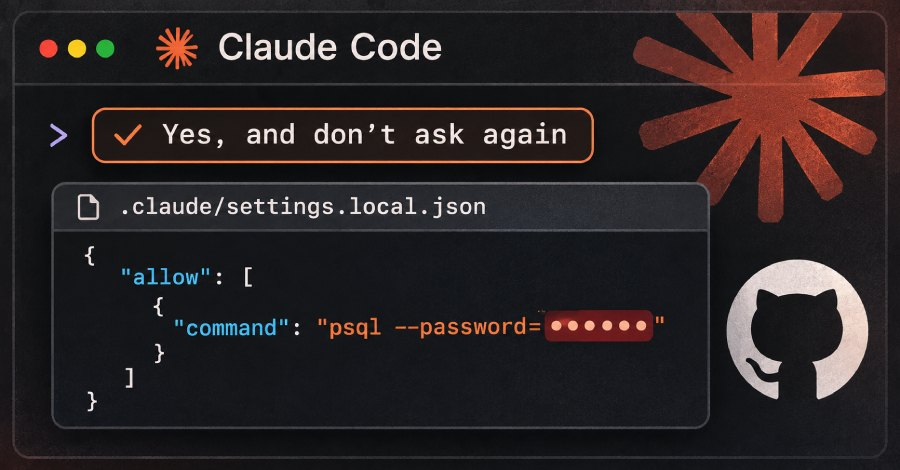
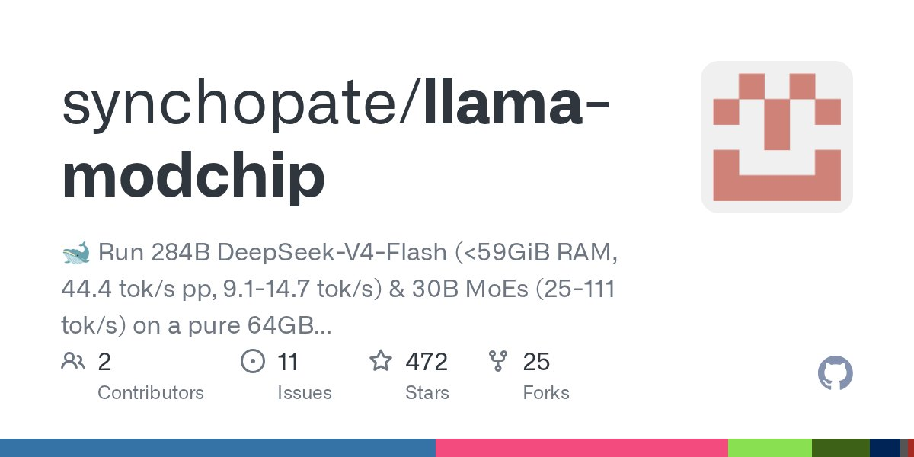

头条 一
英伟达董事会启动独立调查，黄仁勋致信员工承认对妻子不忠
英伟达董事会 11 月 8 日宣布，由独立董事委员会聘请外部律师展开调查，起因是有报道称黄仁勋是境外情报行动的目标。同日他在致员工信中承认对妻子不忠。董事会称没有理由相信国家安全或公司机密遭到泄露，并表示信任他。
情报备忘录称 Megaspeed 前高管被中国国家安全部招募去监视他，这是单方说法，当事方回应未见；英伟达此前称双方接触“不算异常”。
来源：TechCrunch
黄仁勋遭董事会调查、Claude Code 泄密、64GB 跑 284B 模型
英伟达董事会就黄仁勋遭境外情报行动盯上一事启动独立调查；Apiiro 在 1,122 个公开文件里找到 Claude Code 存下的密钥；llama-modchip 称 64GB 内存的 CPU 就能跑 284B 模型。
英伟达董事会 11 月 8 日宣布，由独立董事委员会聘请外部律师展开调查，起因是有报道称黄仁勋是境外情报行动的目标。同日他在致员工信中承认对妻子不忠。董事会称没有理由相信国家安全或公司机密遭到泄露，并表示信任他。
情报备忘录称 Megaspeed 前高管被中国国家安全部招募去监视他，这是单方说法，当事方回应未见；英伟达此前称双方接触“不算异常”。

Apiiro 扫描公开 GitHub 上 104,185 份 .claude/settings.local.json，1,122 份含密钥，共 1,379 个。用户选“Yes, and don't ask again”时，命令里的密码会连同命令原文存进该文件。Apiiro 没验证这些密钥是否仍有效。
2025 年 8 月就有用户报过同类问题，相关 issue 被机器人关闭，研究者称没有得到 Anthropic 回复；215 份连 gitleaks 和 TruffleHog 都没扫出来。

开源项目 llama-modchip 称，经内核补丁和 1.71 bpw 量化，2840 亿参数的 DeepSeek-V4-Flash 可在 64GB 内存的纯 CPU 机器上以 256K 上下文运行，预填充约 44 tok/s，解码约 9 到 15 tok/s。数据均为作者自测。
项目以 Apache-2.0 开源，HN 343 分、GitHub 470 多星；需配套的修改版 llama.cpp 和专用格式，原版 LM Studio、Ollama 无法读取这些模型。
据古尔曼，最早明年推出。
一天 +1,439 星，开源替代品受关注。
浏览器正成为智能体的标配工具。
据转述，未给时间表，别当成已修复。
据 Verge 标题，细节待读，与头条 1 同线。
AI 音乐的版权官司又添新原告。
帖子无证据，软银未回应，只能当传闻。
平台型智能体产品也会下线，数据要早导。
11-02 报道，今天才登上 HN 高位。
社区帖，多数人认为是幻觉，建议限制出网。
玩笑项目，一天内传到 40 万浏览。
与 AI 无关，但说明热榜不全是 AI。
头条 1 最值得看的是董事会的措辞：它承认的是调查，不是结论，也没有说“没有问题”。
Claude Code 这条提醒的不是某个模型，而是默认设置：把密码写进命令，就等于写进了文件。
本地跑 284B 模型很诱人，但速度和格式限制说明，“能跑”和“好用”之间还差一大截。